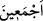

çıkmıştır.
“Biz dilesek, elbette herkese hidâyetini verirdik.” Yâni iyi ve günahkâr nefislerden
her nefse îman ve sâlih amele muvaffak kılmak sûretiyle onlara erişme imkanı vermeye
bizim irâdemiz fiilî olarak taalluk etseydi, onları kendisine şu kesb/kazanma yeri olan
dünyâda verirdik, yapılanların karşılığının verildiği âhiret gününe bırakmazdık.
“Fakat, “Cehennemi hem cinlerden” cinler topluluğundan; yâni şeytanlarla ve
cinlerin kâfirleriyle, “hem insanlardan bir kısmıyla” inkâr ve isyanda İblîs’e tâbi
olanlarla “dolduracağım” diye benden kesin söz çıkmıştır.” hükmüm ve tehdîdim sâbit
olmuştur.
“
” kelimesi, bir işte birleşmeyi te’kid için kullanılır
Bâzıları der ki: “Benden bir söz çıkmıştır”; yâni İblîs “Mutlaka senin o kullarını
azdıracağım.” (Sâd, 38/82) dediği zaman, “Andolsun, cehennemi seninle ve
onlardan sana uyanların hepsiyle dolduracağım.” (Sâd, 38/85) buyurduğum vakit
benim sözüm sâbit olmuş ve benden çıkmıştır, demektir.
et-Te’vîlât’ta denilmiştir ki: “Biz” ezelde sizin hidâyetinizi ve dalâlet ehlinin hidâyete
ermesini “dilesek” hidâyet nûrunun damlalarını ruhlar üzerine isâbet ettirmek sûretiyle
“elbette herkese hidâyetini verirdik. Fakat” Âdem (a.s.) ve İblis yaratılmadan önce
“Cehennemi hem cinlerden hem de insanlardan bir kısmıyla dolduracağım” diye
benden kesin bir söz çıkmıştır.” Yâni bir topluluğun hidâyete erdirilmesi gibi diğer bir
topluluğun da saptırılmasına irâdemiz taalluk etmiştir. Lütuf ve kahır sıfatlarımız ortaya
çıksın diye cennetin sâkinleri olmasını istediğimiz gibi cehennemin de oturanları
olmasını istedik. Çünkü cennet ve ehli lütuf sıfatlarımın mazharı, cehennem ve ehli ise
kahır sıfatlarımın mazharıdır. Ve ben dilediğimi mutlaka yapanım.”
Arâisü’l-beyân’da şöyle denilmiştir: “Cehennem Hak Teâlâ’nın kahrının tecellî ettiği
bir ağızdır. İlâhî kahra istîdadlı kimseleri içine almak için açılmıştır. Cennet de ilâhî
lütfun tecellî ettiği bir ağızdır. O da ilâhî lütfa istîdâdı olanları içine almak için
açılmıştır. Şu halde latîf olan latîf olana, kesîf olan da kesîf olana döner demektir. Allah
dileseydi bütün insanları kendisini tanıyan ârif kullar kılardı. Fakat ilâhî kalem, ezelde
vaad ve vaîdi yazmıştır. Nitekim bu âyetle ilgili İbn Atâ (k.s.) şöyle der: “Dileseydik
her kulu rızâmıza erişmeye muvaffak kılardık. Fakat vaad ve vaîd konusunda ilâhî
irâdenin/seçimin tamam olması için verilen söz gerçekleşti.
Şiblî (k.s.)’a bu âyet sorulunca şöyle dedi: “Yâ Rabbi, cehennemi Şiblî ile doldur ve
kullarını affet ki bütün kulların affedilip kurtuldukları için, Şiblî ise senin azâb etmenle
rahatlasın.” Bu sözün îzahı şöyledir: İşin aslına ulaşmak sûretiyle kimin nazarında lütuf
ve kahır eşit hale gelirse lütuf ve kahrın her ikisinde de maksûdunu görür. Nitekim
Eyyûb (a.s.) dûçar olduğu belâda/imtihanda imtihan edeni gördü. Bu yüzden de vakti ve
hâli hoş oldu, keder ve hüznün içinde gönlü safâ buldu.
Biz belâ ve meşakkat isteriz, zâhid ise âfiyet
İşte her malın bir alıcısı vardır